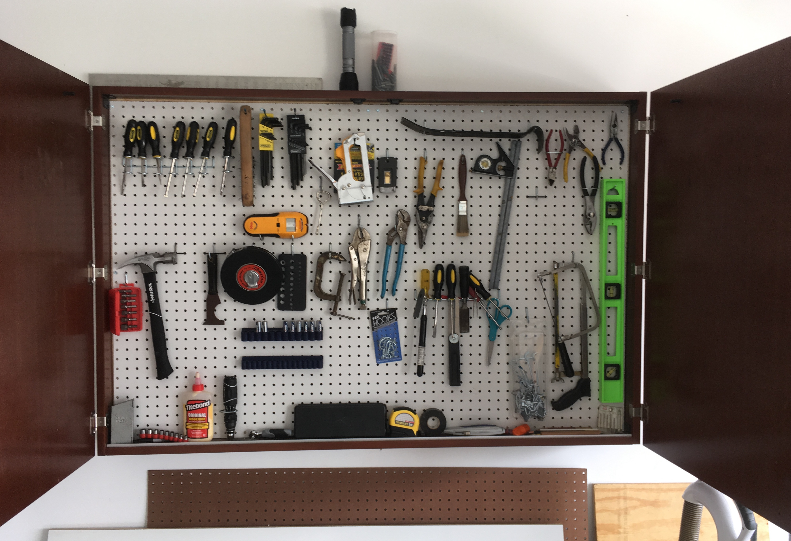
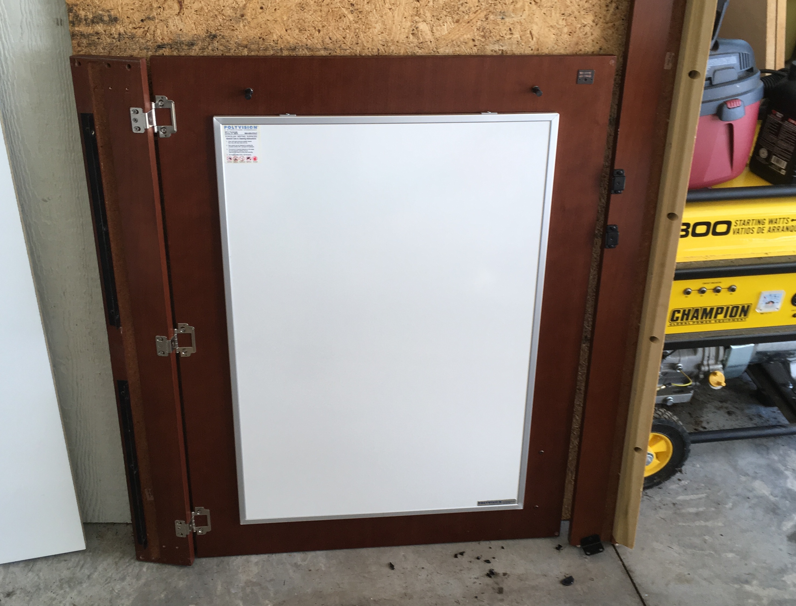

Surplus Tool Cabinet

I found this really durable whiteboard conference room cabinet at the MSU surplus store and converted it to a tool cabinet.
The original cabinet had 3/4" whiteboard panels in the back and additional panels on the inside of each door:

These things were really heavy! I removed all of …
read moreSphere-O-Bot (JJRobots version)
Three and Four way switch status lights

There are two light switches in our mudroom that control the garage lights and the lights on the front of the house. Unfortunately I can not see these lights when standing next to the switches and sense there are multiple switches for each light you can not know if the …
read moreAlexa Dot Holder

My brother got me an Alexa Dot for Christmas a few years ago. It turns out to be a lot of fun. We put it in the kitchen and the kids play music. My wife and I also use it to add things to our shopping list (very convenient!) Anyway …
read more3D printed Switch Guard

We recently moved into a new house and the kids are having fun running around turning on and off all the lights. Unfortunately, some of the light switches are not for lights. One goes to our garbage disposal, another goes to the gas fireplace and another turns off the furnace …
read moreMigration from Blogger to Pelican
Today I was showning someone my old Blogger website and one of the reasons I moved away from blogger is that it was hard to edit and did not work well with my workflow. It occured to me that it may be easy to migrate from Blogger to my new Pelican Blog.
read moreFarmBot
JJRobotics
CNC Mill Picking
I am interested in purchasing a CNC machine for the shop space in our new house. I think I would like to stick to something around $1000 but would be willing to invest as much as $2000 if I can find the right machine. There are a lot of choices …
read moreIntrducing a 3D printer to my daughter's Kindergarten class
We had fun showing off my 3D printer to the Kindergarten class. Although the printer is fun to watch, kids tend to get board with it in just a few minutes. I like to come up with classroom projects that let the kids use things that are printed with the …
read more